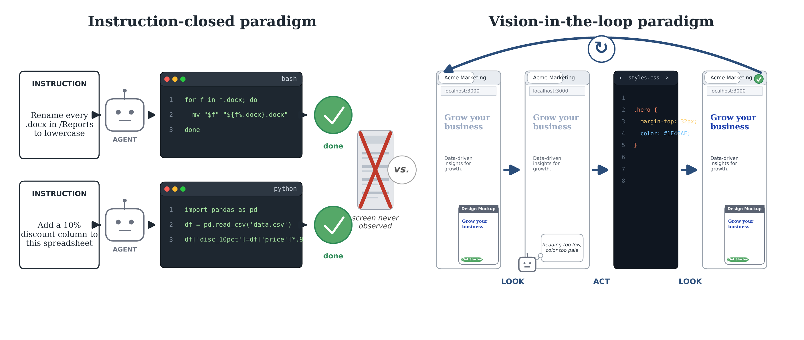

一、研究背景和选题意义
□ 选题意义

左：指令闭环范式（Instruction-closed），界面从未被观察；右：视觉在环范式（Vision-in-the-loop），渲染结果进入决策闭环
现有技术路线的两难
文本模态：精确高效、可验证，但仅覆盖具备接口的软件，无法观测渲染结果
视觉模态：通用、可观测界面，但开销高、步数多，且缺少可验证的奖励信号
→ 需要在统一范式下融合两类模态，并解决其效率、度量与训练问题
理论意义
构建综合数字智能体范式
将文本与视觉模态统一于同一决策过程，形式化定义混合模态（Hybrid-Modality）交互范式，建立面向过程的可信能力度量
研究二
方法意义
揭示效率与行为的可学习性
刻画长程 GUI 轨迹的时空冗余规律以降低推理开销；验证自主编排与自我验证行为可在可验证环境中习得
研究一 · 三
应用意义
服务基础模型与产业落地
使智能体覆盖缺少接口的存量软件；可验证环境与训练数据直接服务前沿基础模型后训练及行业流程自动化
研究四
选题价值：统一文本与视觉两类模态，使通用数字智能体高效、可信、可训练地完成真实数字工作